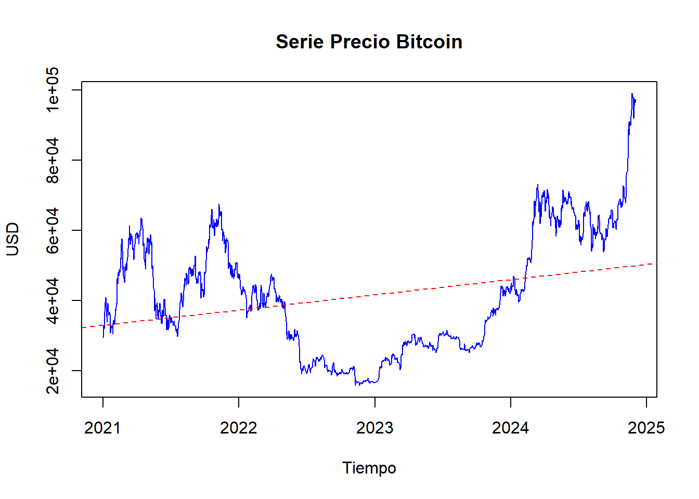
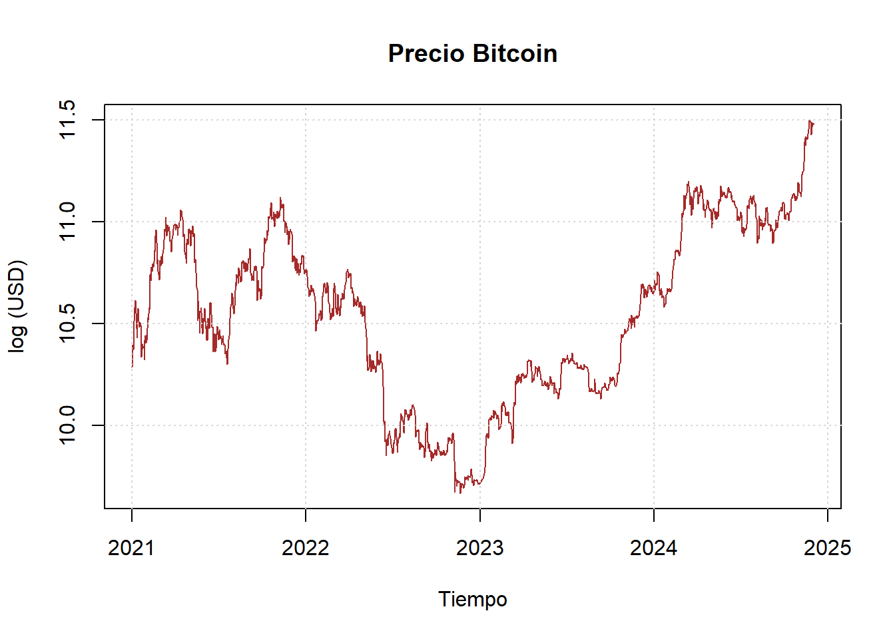
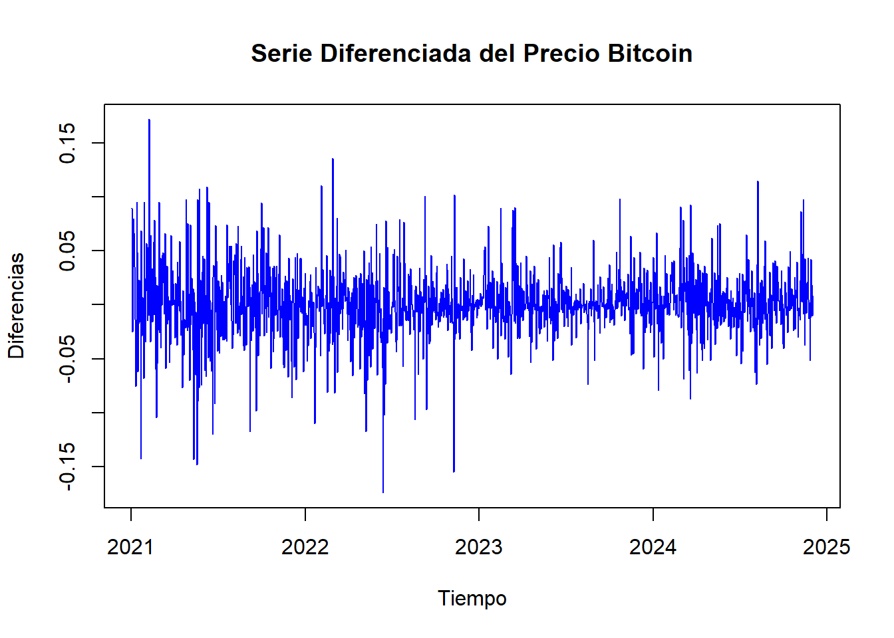
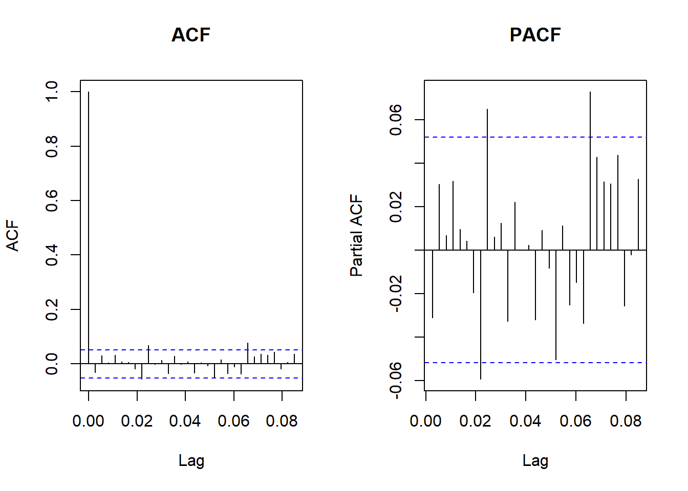
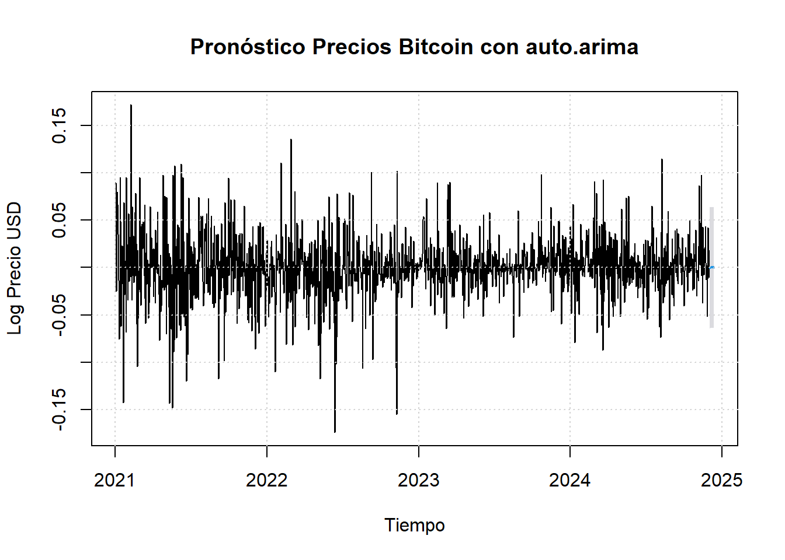
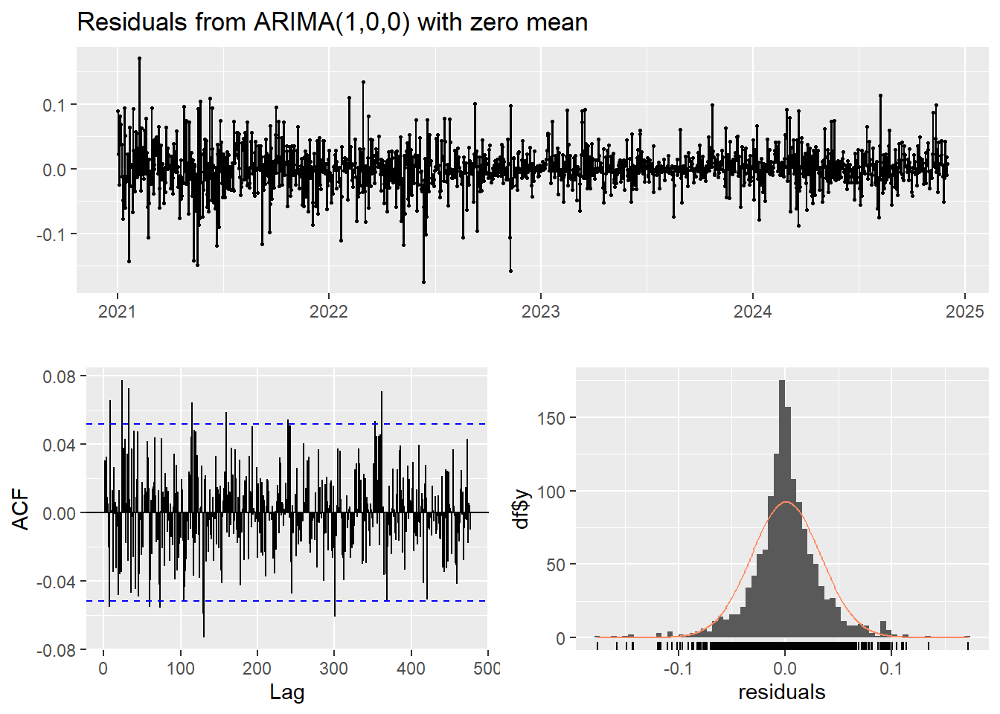
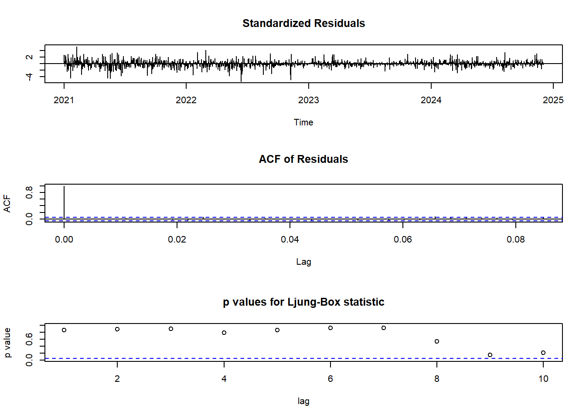
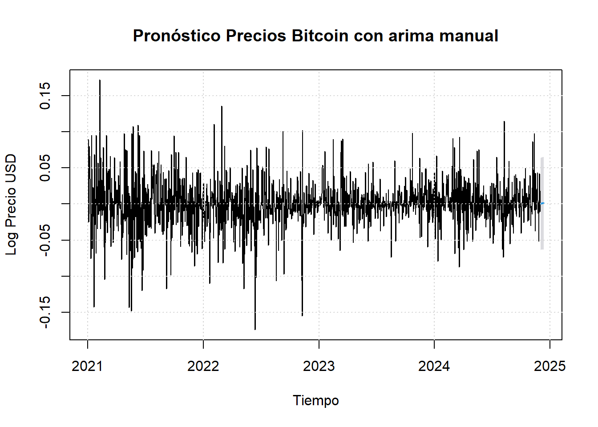
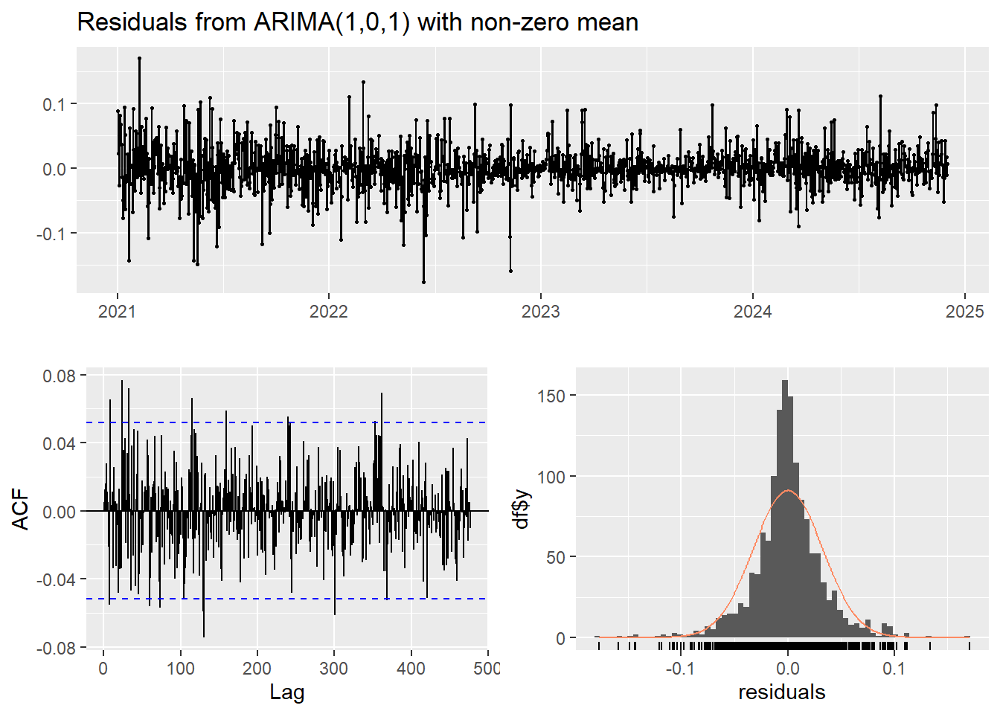
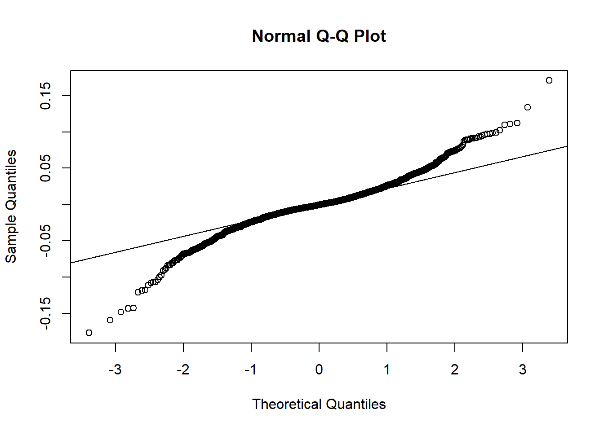

Capítulo 5 Modelos Estacionarios
Los modelos estacionarios desempeñan un papel crucial en el análisis de series temporales. Una serie temporal se clasifica como estacionaria cuando sus propiedades estadísticas, como la media, la varianza y la autocorrelación, permanecen constantes a lo largo del tiempo. En los modelos estacionarios, las relaciones entre puntos en el tiempo son consistentes, lo que permite predecir con mayor precisión futuros valores basados en el pasado. Esto es crucial en aplicaciones como finanzas.
5.1 Modelo ARIMA (Auto)
La metodología Box-Jenkins se utiliza para construir modelos ARIMA (p,d,q), que contiene componentes AR (Autoregresivo), I (Integrado) y MA (Media Móvil):
Visualización de la serie: Ayuda a decidir si es necesario transformar la serie para estabilizar su varianza o hacerla estacionaria.
# Graficar la serie
plot(btc_ts, main = "Serie Precio Bitcoin", ylab = "USD", xlab = "Tiempo", col = "blue", type = "l")
abline(reg = lm(btc_ts ~ time(btc_ts)), col = "red", lty = 2)
Se observa que la amplitud de las oscilaciones aumenta con el nivel de la serie, lo que supone que la varianza no es constante. Adicional, se observa una tendencia ascendente en el precio y posibles ciclos repetitivos, razón por la cual se sugiere realizar una transformación logarítmica.
plot(log(btc_ts),main="Precio Bitcoin",xlab="Tiempo",ylab="log (USD)", col = "brown", type = "l")
grid()
Transformación en Estacionaria: La estacionariedad se refiere a una característica de un proceso estocástico en la que las propiedades estadísticas del proceso no cambian con el tiempo.
# Guardar nuevo vector con log
btc_ts_log <- log(btc_ts)
# Diferenciar la serie
diff_btc2 <- diff(btc_ts_log)
# Graficar la serie diferenciada del logaritmo
plot(diff_btc2, main = "Serie Diferenciada del Precio Bitcoin",
ylab = "Diferencias", xlab = "Tiempo", col = "blue", type = "l")
## Warning in adf.test(diff_btc2): p-value smaller than printed p-value##
## Augmented Dickey-Fuller Test
##
## data: diff_btc2
## Dickey-Fuller = -10.886, Lag order = 11, p-value = 0.01
## alternative hypothesis: stationarySe observa que el valor p de la prueba ADF es menor a 0.05 tras la diferenciación, entonces la serie diferenciada es estacionaria y está lista para modelar.
Identificación de Parámetros: Las funciones ACF y PACF ayudan a identificar los parámetros p (Autoregresivo) y q (Media Móvil).
# Graficar la ACF y PACF
par(mfrow = c(1, 2)) # Dividir la ventana gráfica
acf(diff_btc2, main = "ACF") # Identificar q
pacf(diff_btc2, main = "PACF") # Identificar p
Los cortes en la ACF indican el orden q y los cortes en la PACF indican el orden p. Así, el gráfico ACF establece que, hay un corte significativo en el lag 1 y los demás valores están dentro de las bandas de confianza (parecen insignificantes). Esto indica un componente MA (q=1). Por su parte, también se observa un corte significativo en el lag 1, lo que indica la presencia de un componente AR (p=1). Ahora, como previamente se realizó una diferenciación, entonces se tiene que (d=0). Así, visualmente el modelo ARIMA sería (1,0,1)
Construcción del modelo: A través de la función autoarima, se obtendrá el modelo de ajuste y se comparará con el modelo visual.
## Series: diff_btc2
## ARIMA(1,0,0) with zero mean
##
## Coefficients:
## ar1
## -0.0307
## s.e. 0.0265
##
## sigma^2 = 0.001059: log likelihood = 2869.44
## AIC=-5734.88 AICc=-5734.87 BIC=-5724.35
##
## Training set error measures:
## ME RMSE MAE MPE MAPE MASE ACF1
## Training set 0.0008628861 0.03253173 0.02234498 97.01396 111.0288 0.6934362 0.0004402093La función sugiere un modelo ARIMA(1,0,0): El modelo ajustado incluye un único término autoregresivo (p=1), no incluye componente de integración, dado que la serie fue diferenciada previamente (d=0), y no presenta un componente de media móvil (q=0). En otras palabras, la función indica que dada la naturaleza de los datos, el mejor modelo sería un modelo AR1 (AutoRegresivo).
Un modelo AR(1) implica que el valor de la serie en el tiempo t depende principalmente de su valor en el tiempo t−1. El hecho de que no se incluya el término de media móvil (MA) sugiere que no hay una dependencia significativa entre los errores pasados, lo cual es común en series donde los choques o errores aleatorios no afectan significativamente a los valores futuros.
El valor del coeficiente AR 1 es negativo, lo que indica una relación inversa entre el valor actual y el valor del período anterior, sin embargo, el coeficiente es muy pequeño, lo que sugiere que el efecto autoregresivo es débil.
La significancia del coeficiente se evalúa con el valor t, aproximadamente: -0.0307/0.0265 = -1.15, como este valor t es < 2, entonces el coeficiente no es estadísticamente significativo al nivel de confianza estándar 0.05
La varianza de los residuos muestra un valor bajo.
AIC es negativo, lo cual es una buena señal de ajuste (valores más bajos son mejores).
BIC es negativo, similar al AIC, se usa para comparar modelos. Valores más bajos indican un mejor ajuste penalizando la complejidad.
Por otra parte, las métricas se utilizan para evaluar el rendimiento del modelo en términos de la precisión del ajuste. Menores valores indican un mejor desempeño:
El error medio es cercano a cero, significa que el modelo no tiene un sesgo sistemático en las predicciones, es decir, no subestima ni sobreestima de manera constante.
El modelo tiene errores absolutos bajos (MAE), lo cual indica un buen ajuste.
Los valores de MPE y MAPE son altos, lo que indica que el modelo no es completamente preciso en términos porcentuales. Esto podría deberse a una alta variabilidad en los datos originales o a la presencia de valores extremos.
El MASE indica que el modelo es mejor que un modelo de referencia, lo cual es un buen indicador.
La baja autocorrelación en los residuos (ACF1) respalda que el modelo ARIMA está capturando adecuadamente las dependencias temporales.
Diagnóstico del modelo ARIMA(1,0,0): Consiste en evaluar si el modelo captura adecuadamente las dinámicas de la serie temporal mediante el análisis de los residuos. Los residuos deben comportarse como un proceso de ruido blanco, es decir, ser independientes, no correlacionados, con media cero y varianza constante. Además, se debe verificar si están distribuidos aproximadamente de manera normal, lo que respalda la validez de las inferencias estadísticas del modelo.
##
## Box-Ljung test
##
## data: residuals(modelo_arima_diff)
## X-squared = 14.552, df = 11, p-value = 0.2039Los residuos parecen oscilar alrededor de 0. No se observan patrones evidentes, lo cual es una buena señal, dado que sugiere que el modelo está capturando correctamente la estructura de la serie. Adicional, la mayoría de los puntos están dentro de las bandas de confianza (líneas azules), lo que indica que no hay autocorrelaciones significativas en los residuos.
La gráfica de valores p, muestra que para la mayoría de los lags, los valores p están por encima del nivel de significancia de 0.05 (línea azul). Esto indica que no se puede rechazar la hipótesis nula de que los residuos son ruido blanco, lo cual se corrobora con el test Box-Ljung.
En consencuencia, los residuos son independientes y no presentan correlación significativa, lo que valida el buen ajuste del modelo.
Predicciones: Consisten en utilizar el modelo ajustado para proyectar valores futuros de la serie temporal, basándose en las relaciones identificadas durante el ajuste. Las predicciones pueden incluir intervalos de confianza, que proporcionan una estimación del rango en el que es probable que se encuentren los valores futuros con un nivel de certeza especificado (por ejemplo, 95%).
# Pronóstico para los próximos 10 días
pronostico <- forecast(modelo_arima_diff, h = 10, level = 95)
# Gráfico del pronóstico
plot(pronostico,
main = "Pronóstico Precios Bitcoin con auto.arima",
xlab = "Tiempo",
ylab = "Log Precio USD")
# Agregar una cuadrícula al gráfico
grid()

##
## Ljung-Box test
##
## data: Residuals from ARIMA(1,0,0) with zero mean
## Q* = 287.44, df = 285, p-value = 0.4484
##
## Model df: 1. Total lags used: 286## Point Forecast Lo 95 Hi 95
## 2024.9205 -2.632493e-04 -0.06404658 0.06352008
## 2024.9233 8.080422e-06 -0.06380529 0.06382145
## 2024.9260 -2.480281e-07 -0.06381365 0.06381315
## 2024.9288 7.613206e-09 -0.06381339 0.06381341
## 2024.9315 -2.336869e-10 -0.06381340 0.06381340
## 2024.9342 7.173004e-12 -0.06381340 0.06381340
## 2024.9370 -2.201749e-13 -0.06381340 0.06381340
## 2024.9397 6.758255e-15 -0.06381340 0.06381340
## 2024.9425 -2.074442e-16 -0.06381340 0.06381340
## 2024.9452 6.367487e-18 -0.06381340 0.06381340Los valores pronosticados y los intervalos de confianza muestran una tendencia a estabilizarse rápidamente. Esto sugiere que el modelo ARIMA(1,0,0) ha capturado una dinámica estacionaria en la serie temporal. En otras palabras, sugiere que la serie temporal ha alcanzado un nivel constante después de ser diferenciada, y no se espera una tendencia ascendente o descendente significativa.
Aunque los valores pronosticados son cercanos a 0, los intervalos de confianza indican una variabilidad moderada, pero no grandes oscilaciones futuras.
Este pronóstico confirma que la diferenciación del modelo ha eliminado cualquier tendencia, dejando una serie estacionaria alrededor de 0.
Por otra parte, la ausencia de patrones persistentes sugiere que los residuos son independientes en el tiempo.
La forma de la distribución de los residuos es aproximadamente simétrica y se asemeja a una distribución normal.
Normalidad en los residuos: El test de Shapiro-Wilk evalúa si los residuos de un modelo se distribuyen normalmente. Esto es importante porque uno de los supuestos básicos de los modelos ARIMA es que los errores (residuos) deben seguir una distribución normal con media cero y varianza constante.
##
## Shapiro-Wilk normality test
##
## data: residuales
## W = 0.94689, p-value < 2.2e-16Aunque el análisis gráfico mostró que la distribución de los residuos es aproximadamente simétrica y parece cercana a una normal, el test de Shapiro-Wilk detecta una desviación significativa de la normalidad, probablemente debido a la alta sensibilidad que presenta el test ante tamaños de muestra grandes.
De todas formas, Si los residuos son ruido blanco y no tienen autocorrelación significativa (como lo confirmó el test de Ljung-Box), el modelo sigue siendo válido para predicción, incluso si los residuos no son perfectamente normales.
5.2 Modelo ARIMA (Manual)
Cuando se revisarón los cortes en la ACF y en la PACF, se sugirió un modelo ARIMA (1,0,1), por lo que ahora se evaluará la implementación del mismo, para medir su rendimiento en comparación con el modelo ARIMA (1,0,0).
Construcción del modelo: De forma visual se selecciona un modelo ARIMA(1,0,1).
## Series: diff_btc2
## ARIMA(1,0,1) with non-zero mean
##
## Coefficients:
## ar1 ma1 mean
## -0.5367 0.5019 8e-04
## s.e. 0.3178 0.3243 8e-04
##
## sigma^2 = 0.001059: log likelihood = 2870.47
## AIC=-5732.93 AICc=-5732.9 BIC=-5711.87
##
## Training set error measures:
## ME RMSE MAE MPE MAPE MASE ACF1
## Training set 2.450192e-06 0.03250836 0.02235837 97.98546 140.3593 0.6938518 0.004887155El coeficiente AR(1) es negativo, lo que indica una relación inversa entre el valor actual y el valor del período anterior. Este valor sugiere que un aumento en t−1 tiende a estar asociado con una disminución en t. Como el coeficiente es moderadamente significativo, implica un efecto autoregresivo notable.
El coeficiente MA(1) es positivo, indicando que el error del período anterior contribuye positivamente al valor actual. Este término refleja que el modelo está ajustando fluctuaciones no explicadas de manera razonable.
La significancia de los coeficientes puede evaluarse con sus valores t, aproximadamente: Para AR(1): -0.5367/0.3178 = −1.68. Para MA(1): 0.5019/0.3423 = 1.46. Ambos valores t son menores a 2, lo que sugiere que los coeficientes no son estadísticamente significativos al nivel estándar p > 0.05.
La varianza de los residuos es baja, lo que indica que el modelo captura bien las fluctuaciones de los datos.
Los valores de AIC y BIC son negativos, lo cual es una buena señal de ajuste. Estos valores bajos indican que el modelo tiene un buen equilibrio entre precisión del ajuste y complejidad del modelo.
Por el lado de las métricas se tiene que:
El error medio (ME) es muy cercano a cero, lo que implica que el modelo no presenta un sesgo sistemático en las predicciones, es decir, no subestima ni sobreestima de manera consistente.
El modelo tiene un error absoluto bajo, lo que indica que las predicciones son precisas en términos absolutos.
Los valores de Error porcentual medio y Error Porcentual Absoluto Medio - MPE y MAPE son altos, lo que sugiere que el modelo no es completamente preciso en términos porcentuales. Esto podría deberse a la naturaleza de los datos originales, que tal vez incluyen alta variabilidad o valores extremos.
El Error Absoluto Escalado Medio - MASE indica que el modelo es mejor que un modelo de referencia basado en promedios simples, lo cual es un buen indicador del rendimiento.
La autocorrelación en los errores es baja, lo que respalda que el modelo está capturando adecuadamente las dependencias temporales de la serie.
Diagnóstico del modelo ARIMA(1,0,1): Es importante verificar si los residuos del modelo se comportan como ruido blanco (independientes y distribuidos normalmente).

##
## Box-Ljung test
##
## data: residuals(arima_model)
## X-squared = 13.355, df = 11, p-value = 0.2707Los residuales parecen oscilar alrededor de cero, lo cual es consistente con el supuesto de que son ruido blanco (media cero).
No se observan patrones evidentes, tendencias o estacionalidad en los residuales, lo que indica que el modelo ha capturado bien las dinámicas de la serie.
La amplitud de los residuos parece constante en el tiempo, lo que respalda la suposición de homocedasticidad (varianza constante).
Los gráficos indican que el modelo es adecuado para los datos. Los residuales son ruido blanco, con media cero, varianza constante, y sin autocorrelación significativa.
Predicciones: Se realizan predicciones y se grafican los resultados.
# Pronóstico para los próximos 10 días
pronostico_manual <- forecast(arima_model, h = 10, level = 95)
# Gráfico del pronóstico
plot(pronostico_manual,
main = "Pronóstico Precios Bitcoin con arima manual",
xlab = "Tiempo",
ylab = "Log Precio USD")
# Agregar una cuadrícula al gráfico
grid()

##
## Ljung-Box test
##
## data: Residuals from ARIMA(1,0,1) with non-zero mean
## Q* = 287.16, df = 284, p-value = 0.4365
##
## Model df: 2. Total lags used: 286## Point Forecast Lo 95 Hi 95
## 2024.9205 0.0001160769 -0.06366609 0.06389824
## 2024.9233 0.0012203533 -0.06260062 0.06504132
## 2024.9260 0.0006276332 -0.06320451 0.06445978
## 2024.9288 0.0009457756 -0.06288959 0.06478114
## 2024.9315 0.0007750128 -0.06306128 0.06461131
## 2024.9342 0.0008666697 -0.06296989 0.06470323
## 2024.9370 0.0008174729 -0.06301917 0.06465411
## 2024.9397 0.0008438792 -0.06299278 0.06468054
## 2024.9425 0.0008297056 -0.06300696 0.06466637
## 2024.9452 0.0008373133 -0.06299936 0.06467398Los residuales se comportan como ruido blanco: no presentan autocorrelación significativa ni patrones evidentes, lo cual indica que el modelo está ajustado adecuadamente.
La distribución de los residuos es razonablemente cercana a la normal, lo que respalda la validez de las inferencias y predicciones del modelo. Ahora, aunque los residuos son cercanos a la normalidad, se observa una ligera asimetría en las colas del histograma. Esto podría indicar la presencia de algunos valores extremos o una ligera desviación de la normalidad.
Normalidad en los residuos: El test de Shapiro-Wilk es una prueba estadística utilizada para evaluar si los residuos de un modelo ARIMA (o cualquier otro modelo) siguen una distribución normal. Este test compara la distribución observada de los residuos con una distribución normal teórica.

##
## Shapiro-Wilk normality test
##
## data: residuales_manual
## W = 0.947, p-value < 2.2e-16La falta de normalidad en los residuos no necesariamente invalida el modelo si los residuos siguen siendo ruido blanco (independientes y no correlacionados), lo cual se verifica a través de otros diagnósticos como la ACF y el test de Ljung-Box, sin embargo, una desviación significativa de la normalidad puede afectar la confiabilidad de los intervalos de predicción generados por el modelo.
En este caso, al igual que el modelo con autoarima, se obtiene que visualmente se muestra una distribución normal de los residuos, pero con el test, se establece que se puede rechazar la hipótesis nula de que los residuos siguen una distribución normal.
Lo anterior sugiere recurrir a modelos alternativos para abordar la falta de normalidad en los residuos. Entre estos se encuentran los modelos GARCH, EGARCH, GJR-GARCH, ARFIMA, entre otros.
5.3 Comparación de modelos
Se implementarons los modelos ARIMA (1,0,0) y ARIMA (1,0,1), una vez revisadas sus métricas de desempeño, se concluye que, para la serie de tiempo del Precio de Bitcoin:
Aunque el ARIMA(1,0,1) tiene un log-likelihood ligeramente mayor y menor RMSE, la diferencia es mínima. Además, el ARIMA(1,0,0) muestra un mejor desempeño en AIC, AICc y BIC, lo que sugiere un modelo más eficiente en términos de simplicidad.
El ARIMA(1,0,0)) tiene un MAPE significativamente más bajo, lo que sugiere que genera predicciones más precisas en términos porcentuales.
ARIMA(1,0,1) introduce un parámetro adicional (MA1) pero este no aporta mejoras significativas al modelo. La penalización de complejidad reflejada en el BIC favorece al ARIMA(1,0,0).
El ARIMA(1,0,0) tiene menor autocorrelación en los residuos, indicando que captura mejor las dependencias temporales.
La diferencia entre ambos modelos es marginal, pero ARIMA(1,0,0) es más eficiente porque logra un desempeño casi igual al ARIMA(1,0,1) con menos complejidad. En aplicaciones prácticas, la simplicidad y menor penalización por complejidad hacen al ARIMA(1,0,0) preferible.